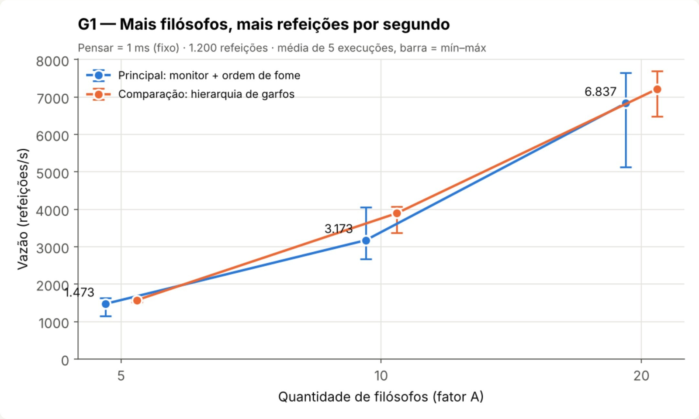
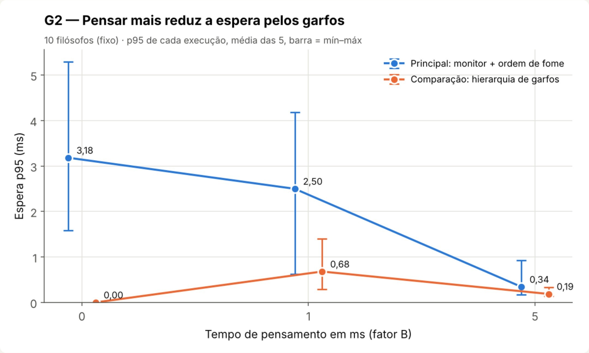
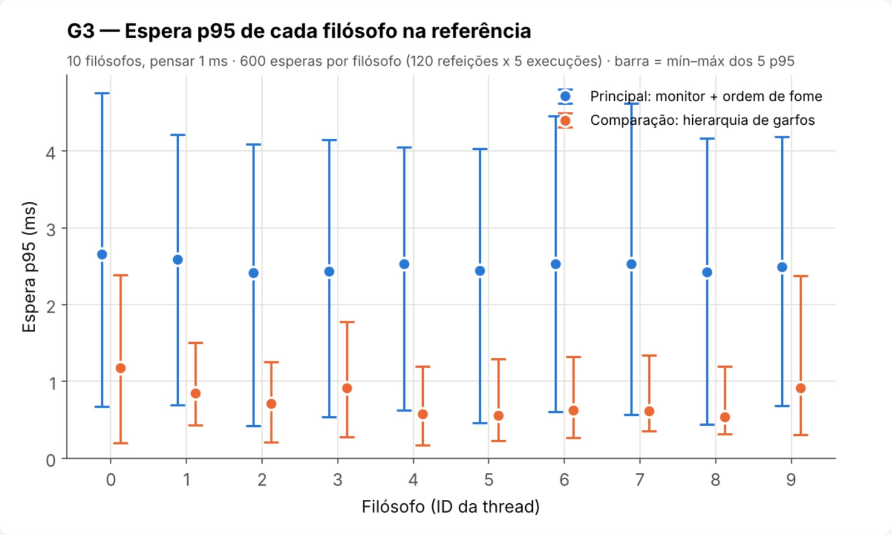
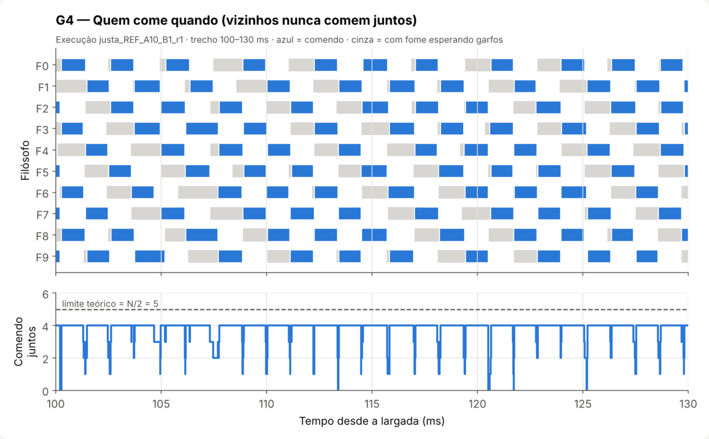
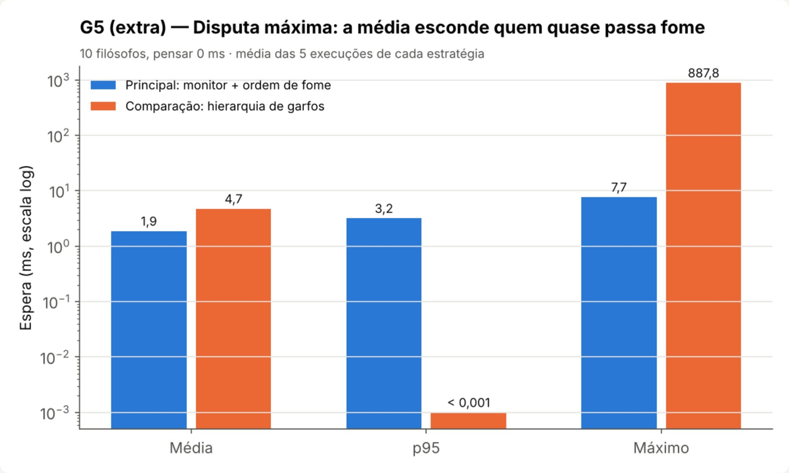

Sistemas Operacionais · Tema 3
Cinco (ou dez, ou vinte) threads disputando garfos — sem travar e sem deixar ninguém com fome.
Luiz Henrique · Vinicius · Raphael — Prof. Lucca Abbado Neres · FAG · nov/2026
Fala: Raphael
Filósofos sentados numa mesa redonda alternam entre pensar e comer. Entre dois vizinhos existe um único garfo.
R1 · um garfo pertence a no máximo um filósofo por vez
R2 · para comer precisa dos dois garfos ao lado
R3 · quem não é vizinho pode comer ao mesmo tempo
R4 · sem deadlock e sem ninguém esperando para sempre
Filósofo = thread · garfo = recurso compartilhado · 1.200 refeições de 1 ms
Fala: Raphael
É combinar a ordem em que processos ou threads mexem num recurso que eles dividem, para que o resultado não dependa da sorte do escalonador.
Só um por vez dentro da seção crítica (o trecho que mexe no dado comum).
Dormir até algo acontecer (“o garfo ficou livre”) sem gastar CPU.
O SO troca a thread a qualquer momento e, com várias CPUs, elas rodam ao mesmo tempo.
Pergunta do professor 1
Fala: Raphael
Uma chave de banheiro
Trava com lock, destrava com unlock. Só um entra; quem chega depois dorme na porta. Quem trancou é quem destranca.
pthread_mutex_lock(&m);Um contador de vagas
wait pega uma vaga (dorme se for 0), post devolve. Com valor N deixa N passarem; qualquer thread pode dar post.
sem_wait(&s); sem_post(&s);Nós usamos: mutex + variável de condição (“dorme até a condição mudar”). Juntos formam um monitor.
Pergunta do professor 2
Fala: Raphael
| No jantar | No sistema operacional |
|---|---|
| Filósofo | Processo ou thread que precisa de recursos |
| Garfo | Recurso exclusivo: lock de arquivo, linha de banco, dispositivo, buffer |
| Precisar de 2 garfos | Transferência entre duas contas, copiar entre dois arquivos travados |
| Ciclo de espera | Deadlock entre processos — o sistema “congela” sem erro |
| Quem fica sem comer | Starvation: um processo de baixa prioridade que nunca recebe CPU |
O kernel do Linux evita o mesmo problema com ordem fixa de travamento (lock ordering) — a mesma ideia da nossa estratégia de comparação.
Pergunta do professor 3
Fala: Raphael
Todos fazem: pega o garfo da esquerda, depois o da direita.
Ciclo fechado → deadlock. Ninguém solta, ninguém come.
TIMEOUT apos 3.0 s: 0 de 5 terminaram.
garfo 0 -> filosofo 0
garfo 1 -> filosofo 1
garfo 2 -> filosofo 2
garfo 3 -> filosofo 3
garfo 4 -> filosofo 4Outros riscos sem sincronização: condição de corrida (dois pegam o mesmo garfo), dados inconsistentes e starvation.
Pergunta do professor 4
Fala: Luiz
Só pega os garfos quando os dois estão livres, numa única operação. Nunca fica segurando um esperando o outro.
Ao ficar com fome tira uma senha. Se o vizinho ficou com fome antes, ele tem a vez.
Mecanismo: 1 mutex + 1 variável de condição por filósofo = monitor
for (r = 0; r < cota; r++) {
dormir_ms(pensar_ms); // PENSA
t_pedido = agora_ms(); // fome
pegar_garfos(id, &t_aut);
espera[r] = t_aut - t_pedido;
dormir_ms(comer_ms); // COME
soltar_garfos(id);
}Pensar e comer ficam fora do mutex: a seção crítica é só a decisão.
Fala: Luiz
pode_comer(i)/* mesa.c — chamada com mesa_mtx travado */
static bool pode_comer(int i) {
int e = ESQ(i), d = DIR(i);
if (estado[i] != COM_FOME) return false;
if (estado[e] == COMENDO ||
estado[d] == COMENDO) return false;
if (estado[e] == COM_FOME &&
senha[e] < senha[i]) return false;
if (estado[d] == COM_FOME &&
senha[d] < senha[i]) return false;
return true;
}Se um vizinho come, um dos meus garfos está com ele.
Vizinho com fome e senha menor tem a vez.
Estados: PENSANDO → COM_FOME → COMENDO
Fala: Luiz
pthread_mutex_lock(&mesa_mtx);
estado[i] = COM_FOME;
senha[i] = proxima_senha++;
while (!pode_comer(i) && !abortar)
pthread_cond_wait(&vez[i], &mesa_mtx);
estado[i] = COMENDO;
tomar_garfo(i, i); // os dois
tomar_garfo(DIR(i), i);
*t_aut = agora_ms();
pthread_mutex_unlock(&mesa_mtx);pthread_mutex_lock(&mesa_mtx);
devolver_garfo(i, i);
devolver_garfo(DIR(i), i);
estado[i] = PENSANDO;
// acorda só os 2 vizinhos
pthread_cond_signal(&vez[ESQ(i)]);
pthread_cond_signal(&vez[DIR(i)]);
pthread_mutex_unlock(&mesa_mtx);cond_wait solta o mutex e dorme sem gastar CPU; ao acordar, retrava e testa de novo (por isso é while, não if).
Fala: Luiz
| Condição (Coffman) | Na solução |
|---|---|
| Exclusão mútua | mantida |
| Sem preempção | mantida |
| Posse e espera | eliminada |
| Espera circular | impossível |
Os dois garfos são pegos juntos, então ninguém segura um esperando o outro: o ciclo não se forma em nenhuma ordem de execução.
O faminto com a menor senha nunca é barrado por prioridade.
Ele só espera o vizinho terminar a refeição atual (1 ms).
Quem termina volta com senha maior → todo mundo chega à frente da fila.
Custo: às vezes alguém com os garfos livres espera o vizinho mais antigo → um pouco menos de paralelismo.
Fala: Luiz
| Alternativa | Ideia e problema |
|---|---|
| Hierarquia de garfos | pega o de menor número primeiro; sem deadlock, mas pode deixar vizinho esperando (testamos) |
| Garçom (semáforo N−1) | no máximo N−1 sentados; quebra o ciclo, não garante justiça |
| Tanenbaum sem senha | estados + vizinhos; sem deadlock, mas com starvation |
| Tenta e solta (trylock) | risco de livelock: todos soltam e tentam de novo |
| Chandy–Misra | garfos “sujos/limpos”; justo, mas bem mais complexo |
Pergunta do professor 5
Fala: Luiz
# 1) compilar
$ gcc -std=c11 -O2 -Wall -Wextra -pthread *.c -o simulacao -lm
# 2) disputa real: 5 filósofos, pensamento zero
$ ./simulacao --filosofos 5 --pensar 0
Refeicoes: 1200/1200 ... Violacoes=0 Status=OK
# 3) a versão ingênua trava (e o timeout encerra)
$ ./simulacao --filosofos 5 --pensar 0 --estrategia ingenua --timeout 3
TIMEOUT apos 3.0 s: 0 de 5 filosofos terminaram.O que olhar: 1.200/1.200 refeições, 0 violações, status OK — e no ingênuo, cada garfo preso com um filósofo.
Fala: Vinicius
| Fator | Valores | Fixo |
|---|---|---|
| A · filósofos | 5 · 10 · 20 | pensar 1 ms |
| B · pensar | 0 · 1 · 5 ms | 10 filósofos |
Referência: 10 filósofos, 1 ms · 5 configurações × 5 repetições = 25 execuções (+ as mesmas 25 com a hierarquia, para comparar).
1.200 refeições de 1 ms · relógio monotônico · 2 CPUs · limite de 30 s
50/50 execuções OK · 0 violações · 0 timeouts
refeições concluídas ÷ tempo total
de “fiquei com fome” até “tenho os dois garfos”
95% das esperas foram menores ou iguais a ele — mostra a cauda que a média esconde
Fala: Vinicius

a cada vez que N dobra: 1.473 → 3.173 → 6.837 refeições/s
Por quê: mais garfos = mais gente comendo junto (até N/2: 2, 5 e 10).
Confirma a hipótese. As barras de N diferentes não se sobrepõem.
Pensar 1 ms fixo · 5 execuções por ponto · barra = mín–máx
Fala: Vinicius

Menos disputa: quem pensa mais chega menos vezes ao mesmo tempo.
Mas a vazão cai: 3.350 → 3.173 → 1.543/s. Esperar menos não é comer mais.
De 0 para 1 ms as barras se sobrepõem: diferença fraca.
10 filósofos fixo · p95 de cada execução, média das 5 · barra = mín–máx
Fala: Vinicius

Nossa solução: p95 entre 2,42 e 2,66 ms para os 10 filósofos — praticamente igual.
A variação entre execuções (barras) é maior que a diferença entre filósofos.
Hierarquia: espera menor nesta carga, com F0 no topo (F0 e F9 começam pelo garfo 0).
Referência · 600 esperas por filósofo · barra = mín–máx dos 5 p95
Fala: Vinicius

Azul = comendo · cinza = com fome esperando.
Nenhuma faixa azul de Fi encosta na de Fi+1 (nem F9 com F0).
Quase sempre 4 comem juntos; o limite é 5. É o custo da senha.
Conferido nos eventos das 50 execuções: 0 sobreposições.
Execução justa_REF_A10_B1_r1 · trecho de 100 a 130 ms
Fala: Vinicius

Hierarquia: p95 ≈ 0, mas pior espera de 1,1 s — quem solta o garfo pega de novo na hora.
Nossa: pior espera de 11 ms e vazão 3,4× maior.
Carga finita: não prova starvation, mostra desigualdade.
10 filósofos, pensar 0 · média de 5 execuções · escala log
Fala: Vinicius
50/50 execuções OK, 0 violações, todas as cotas, encerramento limpo. Deadlock impossível por construção.
Mais filósofos = mais vazão (×4,6 de 5 para 20). Pensar mais reduz a espera e também a vazão.
A senha limita a espera de todos, ao preço de um pouco de paralelismo (≈4 de 5 comendo).
2 CPUs e pausas de 1 ms aumentam a variação; com 5 filósofos e pensar 0 a senha pode formar comboio.
Luiz Henrique · Vinicius · Raphael